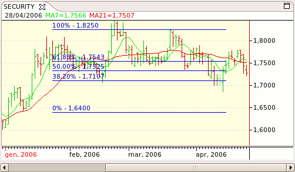

A group of horizontal line(s) used to indicate fibonacci retracement levels.

Move the mouse over one of the four corners of the object (the cursor changes to a cross-hair) and drag to edit. Move the mouse over one of the lines and drag to move the object around.